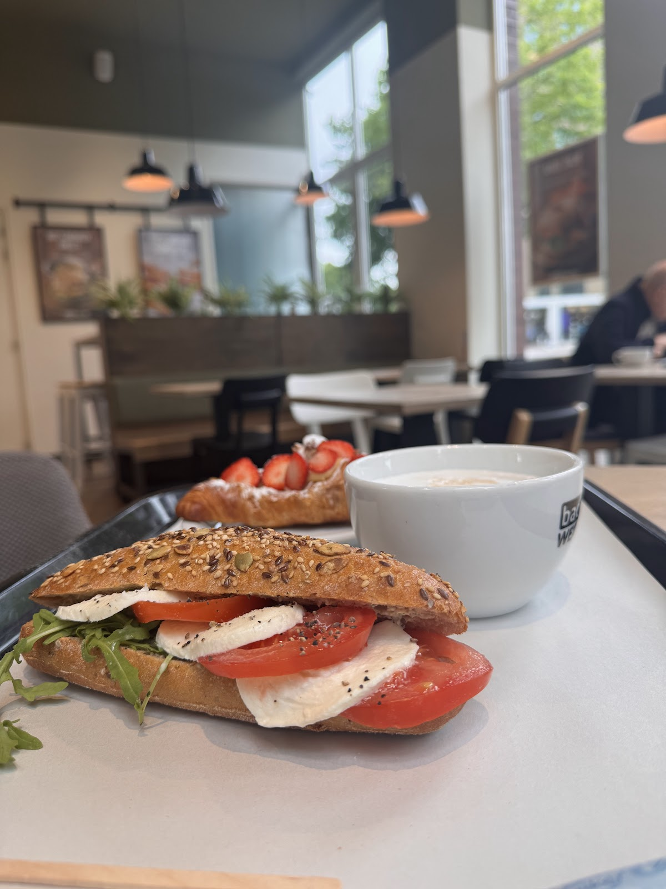

Een vers broodje
Van broodje gezond tot broodje zalm en de boule eiersalade op premium zuurdesembrood. Je ziet wat je krijgt, en je pakt het zo mee of eet het hier aan tafel.
"Ze hebben speciaal voor ons 2 verse broodjes zalm gemaakt. Heel lekker."